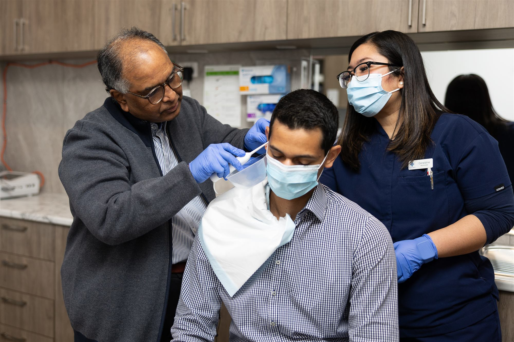
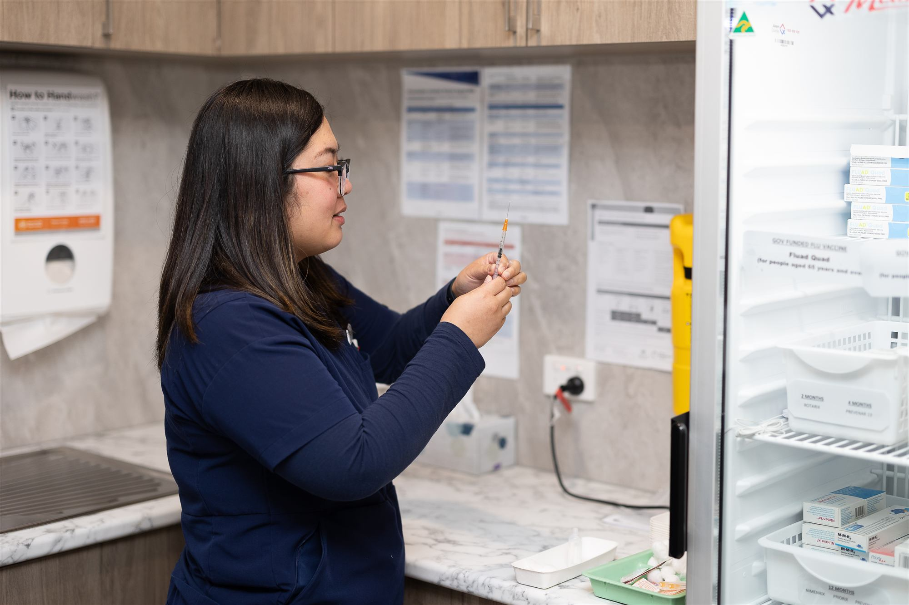

Practise in a family practice that has your back
We support independent GPs, help train the next generation of GP registrars, and work alongside a close-knit team of registered nurses, all on Whitehorse Road in Balwyn.

We look after the practice, so you can focus on yours
Balwyn Central Medical supports independent GPs with modern, well-equipped facilities and the people and systems to run a busy general practice with ease.
When you consult from our rooms, you're supported by experienced registered nurses, a friendly reception and admin team, and reliable technology. Allied health, a pharmacy and pathology collection all operate from the same building, which makes joined-up care simpler for your patients.
Our clinics are part of ICO Health Group's network of extended-hours medical centres across Victoria, and we welcome and value diversity at every location.

Everything around the consult, taken care of
So more of your day goes to patients.
Nursing support
Registered nurses on site whenever we're open, helping with procedures, immunisations, health assessments and care plans.
Reception and admin
A reception and admin team who book, recall and keep the day running, so you can stay with your patients.
Facilities and technology
Private consulting rooms, well-equipped treatment rooms and dependable systems that stay out of your way.
Flexible sessions
Two Whitehorse Road clinics with weekday and weekend sessions, so you can shape a week that suits you.
Learn general practice with supervisors who teach
We're proud to support the teaching of medicine. Some of the practitioners who consult from Balwyn Central Medical are part of the Australian General Practice Training (AGPT) program, and registrars here receive support and supervision as they explore general practice as a specialty.
Our two accredited supervisors are Dr Katherine Firth and Dr Nisha Patel.

Nurses are at the heart of our care
Our nurses support the GPs who are at the front line of care, from immunisations and wound care to health assessments and chronic disease plans.
Opportunities for registered nurses come up across the ICO Health Group network. Check our current vacancies below, or register your interest and we'll let you know when a role opens.
Current vacancies
No openings right now
Thank you for your interest. There are no current vacancies, but we're always happy to hear from GPs, registrars and registered nurses. Register your interest below and we'll be in touch when something comes up.
For opportunities across the group, visit the ICO Health Group website (opens in a new tab).
Tell us a little about yourself
Share your details and [To be confirmed: contact person] will be in touch for a friendly, confidential chat.
This is a prototype form. Enquiries will be sent to [To be confirmed: our email/tracker] once connected. Everything you share stays confidential.